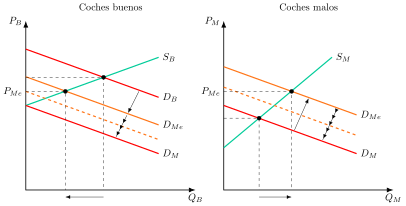
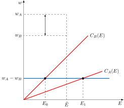
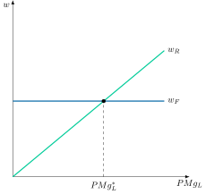
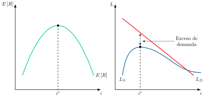

Apuntes para la oposición al Cuerpo de Diplomados Comerciales del Estado
13 Economía de la información y teoría de la agencia: selección adversa y riesgo moral.
13.1 Introducción  1'
1'
Tradicionalmente, la teoría microeconómica parte del supuesto clave de la existencia de información perfecta. No obstante, en la realidad se observa como la información imperfecta es el caso más frecuente como, por ejemplo, en el hecho de la necesidad de garantías para comprar un electrodoméstico, las entrevistas de trabajo, la supervisión bancaria o en la diligencia debida (due diligence) antes de una fusión empresarial.
Así, la información imperfecta puede ser:
Incompleta pero simétrica, es decir, los agentes tienen la misma información pero no toda1.
Incompleta pero asimétrica, es decir, una de las partes de una relación contractual dispone de información relevante que la otra no tiene. Cuando, además, sus intereses están enfrentados, la parte informada puede aprovechar esa ventaja en perjuicio de la otra2.
Así, el funcionamiento del mercado y las relaciones contractuales bajo información asimétrica son estudiados por la economía de la información, cuyo marco analítico es la teoría de la agencia, es decir, el estudio de las relaciones en las que una parte, el principal, contrata con otra, el agente, que dispone de información que el principal no observa3. Este campo ha ganado importancia en las últimas décadas, con los diferentes premios Nobel otorgados en 2001 a Akerlof, Spence y Stiglitz, en 2007 a Myerson, Hurwicz y Maskin, en 2016 a Hart y Holmström4 y en 2020 a Paul Milgrom y Robert Wilson.
Por lo tanto, el objetivo de la presente exposición será el estudio de este problema y de las soluciones propuestas por la teoría económica, que solo pueden alcanzar un óptimo de second best, es decir, la mejor asignación posible dadas las restricciones de información, mediante el siguiente esquema:
Selección adversa.
Riesgo moral.
Selección adversa y riesgo moral a la vez.
13.2 Selección Adversa 9'
La selección adversa es un problema de información asimétrica que surge con anterioridad a la firma del contrato (ex-ante), y se debe a información oculta por una de las partes (ventaja informativa)5. Para que se dé una situación de selección adversa, debe darse:
Asimetría informativa: información oculta, es decir, características de una de las partes que no son perfectamente observables por la otra parte.
Heterogeneidad de la contraparte, ya que si todos los agentes fueran iguales, el tratamiento podría ser homogéneo sin pérdida de eficiencia.
Conflicto de intereses, ya que de lo contrario la contraparte no ocultaría información.
Dada la imposibilidad del principal de distinguir el tipo de contraparte en el contrato (es decir, si se trata de un conductor prudente o de uno temerario, si se trata de un trabajador responsable o de uno vago, etc.), el principal acabará diseñando un contrato que sea adecuado al promedio de la contraparte, es decir, tratará de manera uniforme a todos los agentes, lo que eventualmente conducirá a la expulsión de los agentes buenos (es decir, los conductores prudentes, los trabajadores responsables). Se habrá operado una selección adversa.
Mercado de los limones
El tratamiento teórico del problema comenzó con Akerlof en su famoso paper “The market for lemons: Quality uncertainty and the market mechanism” (Akerlof 1970).
En él, Akerlof explica las implicaciones de las distintas calidades y de la información asimétrica en el mercado de coches usados. El autor se pregunta por qué un coche apenas usado puede llegar a tener un precio tan bajo en el mercado de segunda mano. El Premio Nobel descubre que no se debe a que la gente no lo valore, sino a que existe asimetría informativa.
Akerlof analiza el mercado de coches de segunda mano en el que existen dos tipos:
Coches de buena calidad, en proporción \(1-\lambda\).
Coches de mala calidad –o cacharros en el paper de Akerlof–, en proporción \(\lambda\).
Este mercado se caracteriza por la existencia de información asimétrica, de manera que el vendedor conoce la calidad del coche usado, pero el comprador la desconoce. Si los compradores pudiesen distinguir la calidad de los coches, pagarían según su disposición a pagar por las distintas calidades: será mayor, \(P_{B}\), para los coches buenos que para los coches malos, \(P_{M}\).
Sin embargo, si no pueden distinguir entre los tipos de coche, entonces estarán dispuestos a pagar según la calidad media –al ser neutrales al riesgo, les basta con el valor esperado, sin que las probabilidades que asignan a cada tipo tengan por qué ser del 50%: vienen dadas por la proporción real de cada tipo en el mercado, \(\lambda\) y \(1-\lambda\)–, probabilidades que se van ajustando a la nueva información: \[P_{Me}=\left(1-\lambda\right)P_{B}+\lambda\cdot P_{M} \tag{13.1}\]
En estas circunstancias, los vendedores de coches malos saldrían ganando, porque cobran más de lo que vale su coche, pero los de coches buenos saldrían perdiendo si el precio medio cae por debajo de la valoración mínima que exigen por su coche, en cuyo caso abandonarán el mercado6.
Es posible analizar el problema gráficamente en dos planos de coches de calidad buena y mala con sus respectivos precios y cantidades demandadas, como se observa en la Figura 13.1

En el mercado de coches de segunda mano, los vendedores exigen un precio mayor por un coche bueno, recogido en la oferta \(S_{B}\), que por un coche malo, \(S_{M}\), y los compradores están dispuestos a pagar más por un coche bueno, recogido en la demanda \(D_{B}\) , que por un coche malo, \(D_{M}\). En ausencia de información asimétrica se venderá cada coche en el equilibrio entre oferta y demanda.
Si existe información asimétrica y los compradores no pueden distinguir entre un coche de buena calidad y uno de mala calidad, su disposición a pagar vendrá dada por la demanda media, \(D_{Me}\), con un precio medio, \(P_{Me}\).
Dada la demanda media, se reducirá la cantidad de coches buenos ofrecidos en el mercado. Al haber menos coches buenos, los compradores revisarán su disposición a pagar, aumentando la cantidad de coches malos vendidos. El proceso se repetirá hasta que en el mercado no haya coches de buena calidad y solo se oferten coches de baja calidad. Este colapso total no es, sin embargo, un resultado automático: si la proporción de coches malos, \(\lambda\), es reducida, el precio medio puede mantenerse por encima de la valoración mínima de los vendedores de coches buenos, y el mercado seguiría funcionando de forma mezclada (pooling), sin llegar a colapsar.
Los problemas de selección adversa no solo están presentes en el mercado de coches de segunda mano, sino también en muchos otros mercados.
Aplicaciones
Existen diversas aplicaciones de la teoría de la selección adversa como:
Mercado de seguros: el asegurador no puede distinguir entre personas con un riesgo elevado y un riesgo reducido –salud, accidentes de circulación, etc.– y, de este modo establecerá un precio o prima media. Si este precio es elevado para los que tienen menores riesgos entonces no contratarán seguros, aumentando la proporción de individuos de riesgo elevado. Esto llevará a una subida de prima de modo que solo se asegurarían las personas de mayor riesgo, llevando a la desaparición del mercado ya que no sería rentable vender seguros. Esta situación justificaría la intervención estatal, estableciendo el seguro obligatorio.
Mercado de capitales: Stiglitz y Weiss (1981) analizan los problemas de selección adversa en los mercados de crédito: el prestamista –principal– concede préstamos y créditos a prestatarios cuya probabilidad de devolver la deuda desconoce. Si cobra un tipo de interés medio, este resulta demasiado alto para los prestatarios de menor riesgo y barato para los de mayor riesgo, de modo que cada subida del tipo expulsa a los mejores prestatarios y empeora la calidad media de su cartera. Por eso el prestamista puede preferir no subir el tipo de interés y racionar el crédito.
Mercado de trabajo: el empleador no puede, a priori, distinguir entre los trabajadores más eficientes y productivos de los menos eficientes y productivos. Esto llevaría a que los trabajadores más productivos recibieran un salario inferior a su productividad y los menos productivos un salario superior a esta.
Soluciones: señalización y autoselección
Existen 2 formas de resolver la selección adversa:
Señalización por parte del agente, que trata de señalizar información sobre sus características no observables a través de acciones sí observables. La iniciativa surge, pues, de la parte informada.
Autoselección o filtro (“Screening”) por parte del principal, que desarrolla mecanismos para distinguir a los tipos de agentes, de forma que el agente se identifica al elegir (autoselección). La iniciativa surge, pues, de la parte no informada.
Para el análisis, nos situaremos en el mercado de trabajo, donde podemos suponer que tenemos 2 tipos de trabajadores, diferenciados por su productividad: los trabajadores tipo \(A\), más productivos, y los \(B\), menos productivos, de forma que \(PMgL_{A}>PMgL_{B}\). La mitad de la población es del tipo \(A\) y la otra mitad del tipo \(B\), pero no se puede determinar ex ante de qué tipo es cada empleado, pues la productividad no es observable a priori, ya que estamos en una situación de información asimétrica.
Modelo de Señalización de Spence
El modelo de (Spence 1973) muestra cómo los trabajadores más productivos pueden señalizarse a través de la educación.
En efecto, aunque no se puede establecer a priori a qué tipo corresponde cada trabajador, sí podemos analizar una característica observable: la educación, E (medida en un índice de años de estudio, titulaciones, etc.). La clave radica en que la educación tiene un coste (financiero, de oportunidad, desutilidad, etc.), \(C\left(E\right)\), y que ese coste es mayor para los individuos poco productivos que para los más productivos, \(C_{B}(E)>C_{A}(E)\).
La empresa decidirá qué salario abona a los trabajadores en función de su nivel de educación. Para ello fija un nivel de educación umbral, \(\hat{E}\), a partir del cual cree que el trabajador es productivo. De modo que:
Si \(E\geq\hat{E}\), el empresario pagará \(w_{A}\), pues considera que el trabajador es del tipo productivo (es decir, tipo \(A\)).
Si \(E<\hat{E}\), el empresario pagará \(w_{B}\), siendo menor que \(w_{A}\).
Es decir, la empresa clasifica a los trabajadores como productivos o poco productivos según alcancen o no el nivel de educación umbral7.
Condiciones de señalización
Para que la educación actúe como una señal los salarios deben cumplir 3 condiciones:
Restricción de participación: \(w_{A}-C_{A}\left(\hat{E}\right)>w_{R}\), donde \(w_{R}\) es el salario de reserva, para que a los trabajadores \(A\) les compense educarse y trabajar antes que quedarse con su salario de reserva.
Restricción de incentivos 1: \(w_{A}-C_{A}\left(\hat{E}\right)>w_{B}\), entonces a los trabajadores \(A\) les interesará obtener el nivel de educación \(\hat{E}\).
Restricción de incentivos 2: \(w_{A}-C_{B}\left(\hat{E}\right)<w_{B}\), entonces a los trabajadores \(B\) no les compensa obtener el nivel de educación \(\hat{E}\).
Gráficamente, en un plano salarios, \(w\), y nivel de educación, \(E\), como el de la Figura 13.2, se representan las curvas de costes de la educación para los trabajadores \(A\) y \(B\) y para el nivel de educación señal, \(\hat{E}\), se va a calcular la diferencia entre \(w_{A}\) y \(w_{B}\), y trasladar dicha diferencia hacia el eje de abscisas. Esto determinará cómo el punto de la diferencia quedará por encima de la curva de costes de los trabajadores productivos, \(C_{A}\left(E\right)\), es decir, les compensará acceder al nivel de educación señal \(\hat{E}\), pero quedará por debajo de la curva de costes de los trabajadores poco productivos, \(C_{B}\left(E\right)\), por lo que no les compensará acceder a dicho nivel de educación.

Asimismo, cabe destacar que los valores de equilibrio de E son múltiples: todos aquellos para los que el coste de incurrir en ese nivel de educación es lo suficientemente alto para el tipo B como para que no le compense incurrir en él para acceder al mayor salario (es decir, por encima de \(E_{0}\)), pero lo suficientemente bajo como para que al tipo A sí le interese educarse (es decir, por debajo de \(E_{1}\)). Esta estructura de salarios dará lugar a un equilibrio separador (separating equilibrium), es decir, los individuos de diferente tipo toman decisiones diferentes respecto de la señalización8.
Otras señales serían las garantías en el mercado de coches usados, marcas, estándares de calidad, licencias/permisos/homologaciones (profesionales liberales, estrellas de un hotel), auditorías, calificaciones de agencias de rating (para inversiones), etc.
No obstante, es preciso subrayar que las señales son efectivas porque son costosas en su justa medida: si fuesen poco costosas, todo el mundo se señalizaría9; si muy costosas, nadie se señalaría. Así, se alcanzaría un equilibrio agrupador.
De esta manera, porque hay que incurrir en un coste adicional, se trata de una solución de second best:
Conforme aumenta el nivel de educación exigido, \(\hat{E}\), los trabajadores \(A\) ven reducido su bienestar, porque pagan un coste mayor por el mismo salario. Los trabajadores \(B\), que no se educan, cobran \(w_{B}\) en lugar del salario medio que obtendrían si nadie pudiera señalizarse.
La señalización tiene un coste que disminuye el bienestar global. En la actualidad los estudios de grado se han normalizado, los agentes más productivos tienen que incurrir en costes mayores (máster).
Crítica desde la teoría del capital humano de Becker (1964): el modelo no considera que la educación pueda aumentar la productividad, al concebirla únicamente como un filtro de habilidades preexistentes. En la práctica, la educación cumple probablemente ambas funciones a la vez10.
Señal vs Capital Humano
Como curiosidad, el modelo de Spence contrasta con la teoría del capital humano de Becker (1964), en la que la educación es útil porque aumenta la productividad (algo que no asume el modelo de Spence):
Spence: ↑ productividad \(\Rightarrow\) ↑ educación (señal) \(\Rightarrow\) ↑ salario.
Becker: ↑ educación (inversión) \(\Rightarrow\) ↑ productividad \(\Rightarrow\) ↑ salario.
Autoselección: el principio de revelación de Myerson
Estos modelos se basan en el principio de revelación de Myerson (1979)11. En ellos el principal diseña un menú de contratos de manera que cada uno de ellos va dirigido a un tipo específico de agentes. El diseño de este menú ha de ser tal que cada individuo esté mejor con el contrato pensado para él (restricción de autoselección o de compatibilidad de incentivos), de forma que, al elegir, revele su tipo. El principio de revelación garantiza que limitarse a este tipo de menús no supone ninguna pérdida: cualquier resultado que el principal pudiera alcanzar con un mecanismo más complicado puede lograrse también con uno en el que a cada agente le conviene revelar la verdad12.
Algunos ejemplos de menús de contratos son:
Modelo de grilletes dorados de Salop y Salop (1976): la empresa, que invierte en formar a sus trabajadores, ofrece un contrato con salario bajo los primeros años, que irá aumentando con la antigüedad (por ejemplo, un contrato de prácticas). El trabajador que prevé marcharse pronto sabe que no llegará a cobrar los salarios más elevados, por lo que no le interesará el contrato, y solo lo aceptarán quienes piensan quedarse13.
Modelo de autoselección de Milgrom y Roberts (1992): la empresa ofrece dos tipos de salarios: uno fijo y otro variable. Gráficamente, en un plano de salario, \(w\), y productividad marginal del trabajo, \(PMgL\), como el de la Figura 13.3, se pueden representar los salarios fijos, \(w_{F}\), y los salarios variables, \(w_{R}\), que serán crecientes con el rendimiento. Si se trata de un trabajador de productividad baja, es decir, si su \(PMgL\in\left[0,PMgL^{*}\right]\), elegirá el salario fijo, mientras que si tiene productividad alta, elegirá el salario variable.

En suma, cuando las empresas compiten ofreciendo menús de contratos, como en el mercado de seguros de Rothschild y Stiglitz (1976), puede no existir equilibrio, y si existe ha de ser separador. Además, en ese equilibrio los agentes de peor tipo obtienen la misma utilidad que con información simétrica, mientras que los de mejor tipo obtienen menos, lo que refleja el coste asociado a la existencia de información asimétrica.
13.3 Riesgo Moral 7'
El riesgo moral es un problema de información asimétrica que surge con posterioridad a la firma del contrato, y se debe al riesgo de acciones ocultas por una de las partes que modifican el valor de la transacción para la otra parte.
Para que nos encontremos en una situación de riesgo moral, debe darse:
Información incompleta: se pueden dar distintos estados de la naturaleza, y los agentes son capaces de asignar probabilidades a cada uno de ellos.
Información asimétrica: acciones ocultas, es decir, acciones de una de las partes que no son perfectamente observables por la otra.
Conflicto de intereses entre el principal y el agente. Mientras que el objetivo del agente es la maximización de su utilidad, el del principal es la maximización de su beneficio. El problema es que cuanto mayor sea el esfuerzo del agente, mayor será el beneficio del principal, pero el esfuerzo genera desutilidad para el agente.
Debe haber un problema de reparto eficiente de riesgos que entre en conflicto con el diseño de incentivos.
El modelo paradigmático de riesgo moral es el del mercado de trabajo, que es el que presentaremos a continuación:
El problema puede modelizarse a partir de la relación entre un empresario (principal) que ofrece un contrato a un trabajador (agente), cuyo nivel de esfuerzo no puede observar.
Los resultados no son un buen indicador del esfuerzo, ya que la relación entre ellos no es unívoca: cuanto más se esfuerce el agente, más probabilidades habrá de que los resultados sean altos, pero un esfuerzo alto no genera necesariamente un beneficio alto. De ahí que la relación entre esfuerzo y resultado se defina a partir de una función de distribución probabilidad.
La solución al problema pasa por el diseño por parte del principal de un contrato que incentive al agente a desempeñar el nivel de esfuerzo óptimo.
Para analizar cómo sería el contrato óptimo, vamos a partir (para centrar el tema) de una situación en la que no hay asimetrías de información, para ver posteriormente cómo varía la solución con asimetría.
Contrato óptimo con esfuerzo observable (no existe riesgo moral)
Con el fin de resolver el problema se parte de los siguientes supuestos:
Información simétrica pero incompleta: los ingresos son una variable aleatoria cuyos posibles valores y probabilidades conocen ambas partes, es decir, hay riesgo.
Relación bilateral entre principal y agente, entre los que tiene lugar un juego en 2 etapas:
El principal (empresario) propone al agente un contrato exigiéndole el nivel de esfuerzo que maximiza sus beneficios, e*.
El agente (trabajador) decide si acepta o no el contrato con el nivel de esfuerzo exigido por el principal. Las preferencias sobre el riesgo vienen expresadas por una función tipo von Neumann-Morgenstern (vNM).
Los resultados esperados (ingresos, X) del principal dependen de:
El estado de naturaleza que se dé, i, de todos los posibles, n, teniendo cada uno una probabilidad pi de materializarse. De ahí que se hable de resultados esperados. O lo que es lo mismo: la transacción está sujeta a un riesgo, lo que enriquece el modelo, ya que el esquema de pagos óptimo dependerá también de la actitud del principal y del agente ante el riesgo.
El esfuerzo del agente puede ser más alto o más bajo, y afecta a las probabilidades de que se dé un estado de la naturaleza u otro . El esfuerzo, en este primer modelo, es verificable (es decir, información simétrica –no hay riesgo moral–). Concretamente, la distribución de probabilidad de un esfuerzo alto domina estocásticamente a la de un esfuerzo bajo, es decir, que cuanto mayor sea el esfuerzo más probabilidades habrá de que se dé un buen resultado.
Por lo tanto, la función de resultados (ingresos) esperados es: \[EX=\sum\limits_{i=1}^{n}p_{i}\left(e\right)\cdot x_{i} \tag{13.2}\] donde \(x_{i}\) es el resultado si ocurre el estado de la naturaleza \(i\). Además, como se apuntaba antes, cuanto más alto sea \(e\), más probabilidades habrá de que \(x\) sea alto.
Por su parte, la utilidad esperada del principal, que depende del beneficio que le queda tras pagar el salario, será \[BE=\sum\limits_{i=1}^{n}p_{i}\left(e^{*}\right)\cdot B\left[x_{i}-w\left(x_{i}\right)\right] \tag{13.3}\] donde el salario del agente dependerá, en el planteamiento inicial, del resultado finalmente obtenido.
El principal se enfrenta a un trade-off: cuanto mayor sea el esfuerzo del agente, mayor será el ingreso esperado, pero mayor será también el salario que tiene que pagarle. Así, el nivel de esfuerzo que maximiza su función objetivo será \(e^{*}\). Nótese que el problema del principal no termina aquí: su problema más importante, de hecho, es determinar el salario asociado al esfuerzo que maximiza sus beneficios, \(e^{*}\), en función tanto de su actitud frente al riesgo como de la del agente.
La pregunta es: ¿aceptará el trabajador el contrato? La utilidad esperada del agente será: \[UE=\sum\limits_{i=1}^{n}\left[p_{i}\left(e^{*}\right)\cdot u\left(w\left(x_{i}\right)\right)\right]-v\left(e^{*}\right) \tag{13.4}\] donde \(v\) es la desutilidad del agente generada por el esfuerzo exigido por el principal, que será mayor cuanto mayor sea el esfuerzo.
De esta forma, el agente aceptará el contrato si la utilidad esperada de trabajar con ese nivel de esfuerzo es al menos igual a su utilidad de reserva, es decir, a la que obtendría con su mejor alternativa (por ejemplo, el salario en otra empresa o el subsidio por desempleo). Esta es la llamada restricción de participación14.
Así, en el programa de optimización el problema del principal será determinar el esquema de pagos óptimo, es decir, el que maximiza sus beneficios y, al mismo tiempo, hace que el trabajador prefiera aceptarlo a quedarse con su utilidad de reserva: \[\max\quad BE=\sum\limits_{i=1}^{n}p_{i}\left(e^{*}\right)\cdot B\left[x_{i}-w\left(x_{i}\right)\right] \tag{13.5}\] sujeto a la restricción de participación \[\sum\limits_{i=1}^{n}\left[p_{i}\left(e^{*}\right)\cdot u\left(w\left(x_{i}\right)\right)\right]-v\left(e^{*}\right)\geq U_{R} \tag{13.6}\] donde la \(CPO\) \[\dfrac{B^{\prime}\left[x_{i}-w\left(x_{i}\right)\right]}{u^{\prime}\left(w\left(x_{i}\right)\right)}=\lambda \tag{13.7}\]
La restricción de participación se va a cumplir siempre en igualdad, es decir, el empresario no va a pagar más de lo que sea necesario, obteniendo el trabajador la Utilidad de reserva (utilidad mínima por la que estaría dispuesto a trabajar), \(U_{R}\). Por otro lado, \(\lambda\) mide el aumento marginal de la FO cuando la utilidad aumenta marginalmente. La restricción se satura (con \(B^{\prime}\), \(U^{\prime}>0\) por lo que \(\lambda>0\)).
Solución: actitudes frente al riesgo
La solución al problema dependerá de la actitud frente al riesgo del principal y del agente:
Principal neutral y agente averso: si el principal es neutral, entonces \(B^{\prime}\) (utilidad marginal del beneficio) será constante, porque su función de utilidad sobre el beneficio, \(B\), es lineal \(\left(B^{\prime}>0;\,B^{\prime\prime}=0;\,U^{\prime}>0,\,U^{\prime\prime}<0\right)\) (si el principal es neutral será indiferente a incurrir en un mayor riesgo, solo le importa el beneficio esperado). Como el esquema óptimo implica que \(B^{\prime}/u^{\prime}=\lambda\), y \(\lambda\) también es constante, entonces \(u^{\prime}\) (utilidad marginal) deberá ser necesariamente constante para satisfacer dicha condición. Pero si el agente es averso al riesgo, sabemos que \(u^{\prime}\) no será constante, sino decreciente. Por tanto, la única forma de que \(u^{\prime}\) sea constante es que el salario sea siempre el mismo con independencia del resultado empresarial. Conclusión: si el principal es neutral y el agente es averso, el reparto óptimo del riesgo consiste en que el principal asuma todo el riesgo de los resultados, de forma que el principal ofrecerá un contrato al agente en el que aquél deberá asumir todo el riesgo de la operación y pagar al agente un salario constante15, de manera que el agente estará completamente asegurado. El contrato ofrecido por el principal sería del tipo: “Tendrías que realizar un esfuerzo e*, y tu salario será fijo”. Y si el trabajador acepta el contrato, solo puede realizar e*, y no menos, ya que éste es observable, y recibirá un salario fijo (lo veremos más en detalle más adelante).
Principal averso y agente neutral: si el principal es averso, entonces \(B^{\prime}\) será decreciente (porque ahora \(B^{\prime\prime}<0\) y \(U^{\prime\prime}=0\)). Como el esquema óptimo implica que \(B^{\prime}/u^{\prime}=\lambda\), y \(\lambda\) también es constante, entonces \(B^{\prime}\) deberá ser necesariamente constante para satisfacer dicha condición. Pero si el principal es averso al riesgo, sabemos que \(B^{\prime}\) no será constante, sino decreciente. Por tanto, la única forma de que \(B^{\prime}\) sea constante es que el beneficio del principal sea siempre el mismo con independencia del resultado empresarial. Conclusión: si el principal es averso y el agente es neutral, el reparto óptimo del riesgo consiste en que el agente asuma todo el riesgo de los resultados, de forma que el principal ofrecerá un contrato al agente en el que éste deberá asumir todo el riesgo de la operación y pagar al principal un canon constante (es decir, contrato de franquicia), de manera que el principal estará completamente asegurado.
¿Cuál de los dos escenarios es más común? El primero, ya que: i) el principal puede diversificar; y ii) el empresario puede hacer difusión del riesgo entre los accionistas.Principal y agente aversos: Será igual que en los casos anteriores, pero la distribución dependerá de la aversión al riesgo de cada uno. Por lo tanto, si el principal es averso al riesgo y el agente es averso, la solución pasará por que ni el beneficio ni el salario serán constantes. Concretamente será mayor en la situación de éxito que en la de fracaso. Así, el reparto óptimo del riesgo consiste en que ambos asuman parte del riesgo. El agente más averso estará más protegido.
Principal neutral y agente neutral: Cualquier reparto es óptimo (suponiendo que las pendientes de las curvas de indiferencia son iguales).
En suma, bajo información simétrica se produce un reparto óptimo de riesgos siendo además la solución óptima de Pareto en términos de eficiencia. La maximización del beneficio esperado sujeto a la restricción de participación garantiza que el agente realice el esfuerzo deseado por el principal. La solución en cambio variará en función de los perfiles con respecto al riesgo de ambos.
Contrato óptimo con esfuerzo no observable (existe riesgo moral)
En el caso de que el esfuerzo no sea observable (existe riesgo moral), se mantienen los mismos supuestos que antes, con la diferencia de que ahora el esfuerzo del agente no es observable por parte del principal, por lo que habrá información asimétrica. El juego ahora es de 3 etapas:
El principal (empresario) propone al agente un contrato exigiéndole el nivel de esfuerzo que maximiza sus beneficios, \(e^{*}\).
El agente (trabajador) decide si acepta o no el contrato.
Tras aceptarlo, el agente decide si realiza el esfuerzo exigido por el principal, \(e^{*}\), o uno más bajo, \(e^{b}\)16.
Dado que ahora el nivel de esfuerzo del agente no es observable, si el principal ofrece un salario constante como antes, el agente tendrá incentivos a realizar un nivel de esfuerzo menor al óptimo, \(e^{b}<e^{*}\). De ahí que, en presencia de riesgo moral, el principal tenga que rediseñar el esquema de pagos.
Esquema de pagos óptimo
Ahora, el esquema de pagos óptimo deberá contemplar, además de la maximización del beneficio y de la restricción de participación, una restricción adicional17: la de incentivos18. En efecto, tendrá que ofrecer un esquema de pagos tal que la utilidad del agente sea mayor (o igual) si realiza el esfuerzo óptimo exigido por el principal, \(e^{*}\), que si realiza uno menor, \(e^{b}\): \[\sum\limits_{i=1}^{n}\left[p_{i}\left(e^{*}\right)\cdot u\left(w\left(x_{i}\right)\right)\right]-v\left(e^{*}\right)\geq\sum\limits_{i=1}^{n}\left[p_{i}\left(e^{b}\right)\cdot u\left(w\left(x_{i}\right)\right)\right]-v\left(e^{b}\right) \tag{13.8}\] ahora ambas restricciones también se saturan (la restricción de participación y la de incentivos), dando lugar a la nueva CPO: \[\dfrac{B^{\prime}\left[x_{i}-w\left(x_{i}\right)\right]}{u^{\prime}\left(w\left(x_{i}\right)\right)}=\lambda+\mu\left[1-\dfrac{p_{i}\left(e^{b}\right)}{p_{i}\left(e^{*}\right)}\right],\quad\forall i \tag{13.9}\] donde ahora aparecen dos multiplicadores, \(\lambda\) y \(\mu\), al haber sujeto la función objetivo a dos restricciones.
La ratio de verosimilitud es la probabilidad de obtener el resultado \(x_{i}\) si el esfuerzo ha sido menor al óptimo, \(p_{i}\left(e^{b}\right)\), dividido por la probabilidad de obtener el resultado \(x_{i}\) si el esfuerzo ha sido el óptimo, \(p_{i}\left(e^{*}\right)\). \(\mu\) es el multiplicador de la restricción de incentivos y mide cuánto le cuesta al principal, en el margen, tener que incentivar al agente. Si \(\mu\) fuese igual a 0, la restricción no sería activa y el contrato coincidiría con el de información simétrica. Con riesgo moral la restricción es activa, de modo que \(\mu\) es positivo y la asimetría de información tiene un coste.
De la CPO se derivan tres implicaciones encadenadas:
Relación negativa entre los ingresos y la ratio de verosimilitud: por la propiedad de la ratio de verosimilitud monótona, cuanto mayor es el resultado obtenido, \(x_{i}\), menor es la ratio, ya que un resultado alto es relativamente más probable bajo el esfuerzo óptimo que bajo un esfuerzo bajo19.
Relación negativa entre la ratio de verosimilitud y el salario: por la CPO arriba vista, y asumiendo que el principal es neutral (por lo que \(B^{\prime}\) es constante) y el agente averso, cuanto mayor es la ratio, menor es el término entre corchetes, \(\left(1-\text{ratio}\right)\), y por tanto menor es \(B^{\prime}/u^{\prime}\), lo que implica una \(u^{\prime}\) mayor; y como \(u^{\prime}\) es decreciente en el salario por la aversión al riesgo del agente20, una \(u^{\prime}\) mayor exige un salario menor.
Combinando ambas relaciones (negativa con negativa), existe una relación positiva entre los ingresos y el salario. Por tanto, el esquema de pagos óptimo es un salario variable que aumenta conforme lo hacen los ingresos (los beneficios para el principal son menores que con información simétrica pero mayores que sin incentivos, porque ahora lo óptimo para el principal es que el agente asuma parte del riesgo de la relación, pero como es averso al riesgo habrá que compensarle dándole un salario esperado mayor para mantener su utilidad en el nivel de la utilidad de reserva); es decir, se traslada parte del riesgo al agente (subóptimo).
En suma, en este caso existe un coste de agencia, es decir, una pérdida de eficiencia respecto a la situación con información simétrica, que da lugar a un second best (equilibrio Pareto inferior). La razón de esta ineficiencia es que se traslada parte del riesgo al agente averso, cuando lo óptimo es que lo soporte íntegramente el neutral.
Implicaciones en política económica
A la hora de diseñar un contrato para cualquier política pública, en el caso de que exista un problema de Riesgo Moral, será necesario diseñar un esquema de pagos dependiente de los resultados para asegurar que el esfuerzo del agente sea óptimo.
Debido a que el Riesgo Moral es un fallo de mercado que conduce a una situación subóptima en términos de bienestar, el diseño de políticas que eliminen la información asimétrica puede ser muy beneficioso (eliminar este fallo de mercado conducirá a una situación Pareto Superior con total certeza cuando no existan otros fallos de mercado, de acuerdo con la Teoría del Second Best)21.
Aplicaciones
A continuación se presentan diferentes aplicaciones de la teoría de la agencia:
Contrato de seguros: El campo de los seguros es el caso típico donde se pueden generar problemas de riesgo moral : el asegurado no tendrá incentivos a ser diligente y evitar el riesgo. Una posible solución es la cobertura parcial de los costes del siniestro, trasladando parte del riesgo al agente.
Separación entre propiedad y gestión: En empresas grandes, los directivos suelen ser agentes distintos a los propietarios, y sus incentivos pueden estar desalineados (pudiendo llevar a cabo acciones que conlleven un mayor beneficio a corto plazo a cambio de un mayor riesgo). El diseño de un contrato correcto será crucial.
Paquetes de rescate macroeconómicos: Una vez recibida la ayuda, los gobiernos pueden no tener incentivos a reconducir la política económica que les había abocado a la situación de emergencia. La solución pasará por imponer condicionalidad a las ayudas.
Mercado de crédito: una entidad financiera puede preferir racionar el crédito antes que subir los tipos de interés, ya que la subida empujaría a los deudores hacia proyectos más arriesgados, con mayor rendimiento si salen bien pero mayor probabilidad de impago, lo que aumentaría la morosidad. Es el modelo de racionamiento del crédito de Stiglitz y Weiss (1981).
13.4 Selección adversa y riesgo moral a la vez 2'
Los problemas de selección adversa y riesgo moral no son mutuamente excluyentes. En efecto, podemos encontrar situaciones en las que ambos problemas se dan simultáneamente.
En el marco de la Nueva Economía Keynesiana, Stiglitz y Weiss (1981) muestran que el mercado de crédito puede estar caracterizado en equilibrio por un racionamiento del crédito. La existencia de información asimétrica en los mercados financieros podría provocar que ante un exceso de demanda de crédito para unos tipos de interés dados, el banco prefiera racionar la oferta y mantener los tipos de interés y el exceso de demanda en vez de aumentar los tipos de interés debido a los problemas de selección adversa y riesgo moral que podrían darse.
La principal razón para la no subida de los tipos es la posible aparición de problemas
Selección Adversa: Los agentes con mejor expediente crediticio no estarán dispuestos a pagar dicho tipo de interés dado que es demasiado elevado para las operaciones de inversión que desean hacer. No obstante aquellos agentes con peor expediente crediticio y con proyectos de inversión más arriesgados sí estarán dispuestos a pedir prestado. Los prestatarios con buen perfil de crédito se verán expulsados del mercado. Los restantes inversores pondrán en peligro la estabilidad financiera.
Riesgo Moral: los mayores costes de financiación harán que los individuos se vean obligados a llevar a cabo inversiones más arriesgadas con el dinero prestado surgiendo así problemas de riesgo moral que de nuevo pondrán en peligro la estabilidad de las entidades de crédito.
Gráficamente, como se observa en la Figura 13.4, se puede representar el problema:
El gráfico de la izquierda muestra el retorno esperado del banco, \(E\left[R\right]\), el cual se calcula como la probabilidad de repago multiplicado por el tipo de interés, \(i\). Al principio la curva es creciente hasta el punto \(i^{*}\), a partir del cual la probabilidad de repago es tan reducida que las posibles ganancias de un tipo mayor son superadas por la baja probabilidad de repago.
El gráfico de la derecha muestra una curva de demanda de dinero, \(L_{D}\), decreciente y una curva de oferta, \(L_{S}\), cóncava con un máximo correspondiente al tipo de interés máximo, \(i^{*}\), mencionado anteriormente.
Para que se vacíe el mercado de crédito, los bancos deberían fijar el tipo de interés correspondiente al cruce entre ambas curvas. Sin embargo, por encima de \(i^{*}\) su rendimiento esperado disminuye, por lo que prefieren mantener \(i^{*}\). No obstante los problemas de riesgo moral y selección adversa llevan a un racionamiento de la provisión de crédito dado por la diferencia entre oferta y demanda.

Implicaciones
En definitiva, la información asimétrica en el mercado de crédito provoca un racionamiento, es decir, una pérdida de transacciones potencialmente beneficiosas. En la práctica existen mecanismos para desvelar más información, como por ejemplo el empleo por parte del demandante de crédito de la existencia de un colateral o de un historial de crédito22.
Este modelo tiene importantes implicaciones en crecimiento económico, ya que el racionamiento del crédito puede llevar a la falta de implementación de proyectos de inversión potencialmente rentables y con ello, reducir el crecimiento económico23.
Este modelo, además, arroja implicaciones de política monetaria. En una situación de racionamiento como la anterior, una política monetaria expansiva del Banco Central podría aumentar dicha oferta de préstamos que hiciese desaparecer el racionamiento de crédito. Por lo tanto, dicha política tendría efectos reales. Un buen ejemplo serían los planes de Quantitative Easing llevados a cabo por el Banco Central Europeo, la Reserva Federal en EEUU y otros Bancos Centrales.
En la Figura 13.4, esto provocaría un desplazamiento hacia arriba de la curva de oferta de préstamos, de modo que esta llegaría a cortar a la curva de demanda justo en su máximo, haciendo desaparecer el racionamiento de crédito, es decir, el exceso de demanda sería cero.
Finalmente, una forma de medir la información asimétrica en el mercado de crédito es la constatación por parte de Holmström y Tirole (2011) de que las grandes empresas del S&P500 en Estados Unidos acumulan una cifra cercana a 1,4 billones de dólares de efectivo. Este comportamiento se justifica precisamente por el racionamiento en el mercado de crédito derivado de la información asimétrica. Las empresas acumulan efectivo ya que la autofinanciación es una forma alternativa de financiarse, de acuerdo con la teoría de las jerarquías financieras.
13.5 Conclusiones  1'
1'
En conclusión, la información asimétrica genera fallos de mercado que impiden alcanzar el óptimo de Pareto, ya sea por selección adversa –cuando la parte no informada no puede distinguir la calidad de su contraparte antes de contratar, como en el mercado de limones de Akerlof– o por riesgo moral –cuando no puede observar su comportamiento tras la firma del contrato–, pudiendo darse ambos problemas a la vez, como en el racionamiento del crédito de Stiglitz y Weiss (1981). Las soluciones estudiadas –señalización, criba, menús de contratos incentivo-compatibles– nunca alcanzan el óptimo de información perfecta, sino una solución de second best.
Esta distorsión no solo afecta a los mercados tradicionales, sino que se manifiesta de forma aún más compleja en la era digital y en las cadenas de agencia o modelos multicapa que involucran a varios agentes y principales interconectados, desde la fiabilidad de las plataformas online hasta la gestión pública delegada. Las soluciones, si bien no siempre alcanzan el óptimo teórico, deben ser innovadoras, aprovechando herramientas digitales para la señalización o la supervisión, como las tecnologías blockchain y el big data. Asimismo, la regulación y el diseño institucional son esenciales para solucionar estas asimetrías, como muestran las recientes Leyes europeas de Mercados Digitales, de Servicios Digitales, y de IA.
Apéndice
13.A.1. El papel de la CESCE ante la selección adversa
CESCE (Compañía Española de Seguros de Crédito a la Exportación) es un excelente ejemplo de cómo una política económica, o en este caso una empresa pública (aunque con actividad comercial), puede actuar para mitigar la selección adversa en un mercado específico: el seguro de crédito y de caución para operaciones internacionales. CESCE es una sociedad anónima mayoritariamente participada por el Estado que actúa como la agencia oficial de crédito a la exportación española, gestionando por cuenta del Estado el seguro de los riesgos comerciales, políticos y extraordinarios asociados a la internacionalización de las empresas españolas24.
Contexto de la selección adversa:
Principales: Las empresas exportadoras españolas que venden bienes o servicios en el extranjero, o las entidades financieras que les otorgan créditos o avales para estas operaciones.
Agentes: Los compradores extranjeros (importadores) o los países donde se realizan las operaciones.
Asimetría de información: Los compradores extranjeros (o los entornos económicos y políticos de sus países) tienen información privada sobre su solvencia real, su probabilidad de impago, o los riesgos políticos y económicos que pueden afectar el cumplimiento de sus obligaciones. Es mucho más difícil para una empresa española evaluar la calidad crediticia de un cliente en un país lejano que la de un cliente local.
Problema de selección adversa: sin una intervención, las aseguradoras privadas de crédito comerciales podrían estar poco dispuestas a ofrecer seguros de crédito a la exportación a ciertos mercados o clientes, o lo harían a precios muy elevados. Esto se debe a que son los exportadores con clientes más arriesgados (o los que operan en mercados más inestables) los que tienen más incentivos para buscar este seguro. Si la aseguradora no puede distinguir entre buenos y malos riesgos, podría acabar asegurando solo los malos, lo que llevaría a un mercado de seguros ineficiente o inexistente.
El papel de CESCE como instrumento de política pública:
Proveedor de información y evaluación de riesgos: CESCE se especializa en el análisis de riesgo país y de crédito a nivel internacional. Recopila y procesa una vasta cantidad de información sobre la solvencia de empresas extranjeras y la estabilidad de diferentes mercados. Esta información es crucial y difícil de obtener para una empresa individual. Al hacerlo, reduce la asimetría de información que sufren los exportadores y las entidades financieras.
Proveedor de seguros de crédito a la exportación: al ofrecer seguros de crédito y de caución (aval) a las empresas españolas (o a sus bancos), CESCE asume el riesgo de impago por parte de los compradores extranjeros o los riesgos políticos/comerciales inherentes a la operación internacional.
Función pública y estratégica: CESCE actúa como un instrumento de política económica para fomentar el comercio exterior de España. Interviene en mercados donde las aseguradoras privadas pueden no estar dispuestas a operar debido a la alta asimetría de información y el potencial de selección adversa, o donde los riesgos son demasiado grandes para ser asumidos solo por el sector privado. Al cubrir estos riesgos, facilita que las empresas españolas se aventuren en mercados internacionales que de otra manera serían inaccesibles o prohibitivamente arriesgados.
En suma, CESCE funciona como un mecanismo para abordar la selección adversa. Al centralizar y especializar el análisis de riesgo en mercados complejos y al ofrecer seguros donde la información es asimétrica y el sector privado podría fallar, CESCE reduce la incertidumbre para los exportadores y sus bancos, incentivando la participación en operaciones internacionales y mitigando el problema de que solo las "malas" operaciones busquen cobertura. Es una forma en que el Estado, a través de una entidad especializada, interviene para corregir un fallo de mercado causada por la asimetría de información.
13.A.2. El papel de las Webs de Rating en la Teoría de la Agencia
Las webs de rating operan principalmente como mecanismos de señalización o filtrado (screening), aunque su impacto exacto puede variar según el diseño de la plataforma y el tipo de mercado. La literatura empírica confirma que estos sistemas de reputación son predictivos del comportamiento futuro de los agentes (Resnick y Zeckhauser 2002) y que replican, a una escala mucho mayor, los mecanismos tradicionales de boca a boca (Dellarocas 2003).
Frente a la selección adversa: antes de que se realice una transacción o se establezca una relación, el principal (consumidor, comprador, empleador, etc.) tiene información limitada sobre las características ocultas del agente (vendedor, proveedor de servicios, producto, etc.). Las webs de rating permiten a los usuarios, que actúan como principales anteriores, compartir sus experiencias y evaluaciones sobre la calidad o fiabilidad del agente: al acumular un gran número de reseñas y calificaciones, estas plataformas crean una reputación pública que actúa como señal de la calidad del agente, de forma que los de alta calidad tienen un incentivo para mantenerla y los de baja calidad quedan expuestos. El principal puede así discriminar entre agentes de diferente calidad, eligiendo aquellos con mejores calificaciones, lo que reduce la probabilidad de incurrir en selección adversa.
Frente al riesgo moral: una vez establecida la relación, el principal no puede observar directamente el esfuerzo o comportamiento del agente. La expectativa de ser calificado ex post crea un incentivo para que el agente actúe de forma que maximice la satisfacción del principal: si sabe que un mal servicio resultará en una baja calificación que dañará su reputación futura (afectando su capacidad para atraer nuevos clientes), tendrá un mayor incentivo para esforzarse. El temor a una mala reputación, o la búsqueda de una buena, mitiga así el riesgo moral al alinear los incentivos del agente con los del principal incluso en ausencia de supervisión directa.
Estos dos mecanismos se observan con claridad en distintas plataformas:
Comercio electrónico (Amazon, eBay): el agente es el vendedor y el principal el comprador. Los compradores califican a los vendedores y dejan comentarios sobre la calidad del producto, la velocidad de envío y el servicio al cliente. Frente a la selección adversa, un comprador puede consultar las calificaciones antes de comprar, de modo que los vendedores con malas calificaciones son menos propensos a atraer compradores, lo que incentiva a los vendedores de baja calidad a mejorar o a salir del mercado. Frente al riesgo moral, el vendedor sabe que su desempeño (tiempo de envío, precisión de la descripción del producto, manejo de problemas) será calificado, lo que le incentiva a mantener un alto nivel de servicio para proteger su reputación y sus ventas futuras.
Transporte y alojamiento (Uber, Airbnb, BlaBlaCar): el agente es el conductor o anfitrión y el principal el pasajero o huésped, que se califican mutuamente tras cada interacción. Frente a la selección adversa, un usuario puede elegir a un conductor o anfitrión basándose en sus calificaciones y reseñas pasadas, evitando a aquellos con reputaciones negativas. Frente al riesgo moral, el conductor sabe que si maneja de forma imprudente o es descortés recibirá una baja calificación que podría llevar a su expulsión de la plataforma o a una reducción en la asignación de viajes, y los anfitriones tienen incentivos para mantener sus propiedades limpias y brindar buena hospitalidad para obtener buenas reseñas.
Reseñas de restaurantes y negocios locales (Yelp, TripAdvisor, Google Reviews): el agente es el negocio (restaurante, hotel, tienda) y el principal el cliente potencial, que comparte sus experiencias y calificaciones. Frente a la selección adversa, un nuevo cliente puede consultar las reseñas para decidir dónde comer o alojarse, evitando lugares con malas críticas sobre higiene o servicio. Frente al riesgo moral, los propietarios tienen un incentivo continuo para mantener la calidad de sus productos y servicios, ya que saben que una mala experiencia puede ser rápidamente compartida y dañar su reputación y, por ende, sus ingresos futuros.
Plataformas de freelancers y servicios profesionales (Upwork, Fiverr, LinkedIn): el agente es el freelancer o consultor y el principal el cliente que busca el servicio. Los clientes califican el trabajo y la comunicación, y los freelancers construyen así un portafolio de reputación. Frente a la selección adversa, un cliente puede elegir un freelancer basándose en sus calificaciones, reseñas y trabajos anteriores, lo que le permite identificar talentos de alta calidad. Frente al riesgo moral, el freelancer sabe que debe entregar un trabajo de calidad y cumplir con los plazos para obtener buenas calificaciones, ya que estas son cruciales para conseguir futuros proyectos.
Aunque las webs de rating son herramientas poderosas, no son perfectas: pueden existir incentivos para dejar reseñas falsas, positivas o negativas, o para manipular las calificaciones, lo que introduce una nueva asimetría de información y puede socavar la confianza (Dellarocas 2003); los usuarios pueden tener diferentes estándares o sesgos al calificar; no todos los principales dejan reseñas, lo que puede llevar a una muestra sesgada de información; y, en los sistemas bidireccionales, el miedo a una calificación negativa recíproca puede disuadir a los usuarios de dejar reseñas honestas.
A pesar de estas limitaciones, el papel general de las webs de rating es fundamental para aumentar la transparencia del mercado al reducir la asimetría de información, lo que lleva a una asignación más eficiente de recursos y a la mejora de la calidad de los bienes y servicios.
13.A.3. Modelos multicapa
En el contexto de la economía de la información y la teoría de la agencia, existe un tipo de modelos denominados modelos multicapa, es decir, situaciones donde la asimetría de información o la relación principal-agente no se limita a una única interacción, sino que se extiende a múltiples niveles o etapas, o involucra a varios agentes o principales interconectados. Este tipo de estructuras jerárquicas de agencia, con delegación sucesiva en varios niveles, fueron formalizadas por (Tirole 1986), quien mostró que la posibilidad de colusión entre los niveles intermedios de una organización condiciona el diseño óptimo de los contratos e incentivos en toda la cadena.
Un modelo multicapa puede darse, en primer lugar, cuando hay múltiples agentes o principales: un principal puede delegar tareas a varios agentes que interactúan entre sí o cuyos comportamientos le afectan por igual (por ejemplo, una empresa y sus diferentes departamentos o empleados); un agente puede rendir cuentas o tener contratos con varios principales (por ejemplo, un consultor que trabaja para varias empresas); o pueden darse redes complejas de relaciones contractuales, con delegación y asimetría de información en diferentes nodos (por ejemplo, cadenas de suministro con subcontratistas).
En segundo lugar, puede darse una delegación en cadena o cascada de agencias: un principal delega una tarea en un agente, y ese agente, a su vez, se convierte en principal para otro agente, y así sucesivamente. Es lo que ocurre, por ejemplo, en la cadena Gobierno (principal) → Ministerio (agente/principal) → Departamento (agente/principal) → Funcionario (agente final), o en la cadena Accionistas (principal) → Consejo de Administración (agente/principal) → Alta Dirección (agente/principal) → Gerentes de nivel medio (agente final). En cada nivel de la cadena surge el problema de la asimetría de información, ya sea selección adversa o riesgo moral, entre el principal de ese nivel y su agente, lo que amplifica los problemas y hace que su gestión sea mucho más compleja, ya que los incentivos y las acciones de un nivel afectan a los demás.
Por último, aunque no son estrictamente multicapa en el sentido de una jerarquía, las interacciones dinámicas o repetidas también añaden una capa de complejidad: en contratos de largo plazo, el comportamiento actual de un agente puede influir en su reputación y en futuros contratos, lo que añade otra capa de incentivos.
Los modelos multicapa son relevantes porque la mayoría de las organizaciones y sistemas económicos del mundo real son inherentemente complejos y jerárquicos, y estos modelos intentan capturar esa complejidad para analizar cómo se propagan los problemas de un nivel a otro (el riesgo moral o la selección adversa en un nivel pueden exacerbar problemas en otros niveles), cómo diseñar contratos e incentivos que funcionen eficazmente a través de múltiples niveles de delegación evitando una alineación de intereses defectuosa, cómo la estructura de una organización puede mitigar o agravar estos problemas, y cómo de efectivas pueden ser las regulaciones cuando hay múltiples capas de asimetría de información.
Así, los modelos multicapa son un concepto importante en este campo y se refieren a la extensión de la teoría de la agencia a escenarios más realistas y complejos con múltiples niveles de interacción y asimetría de información.
A continuación se presentan una serie de ejemplos que ilustran cómo las relaciones de agencia con múltiples capas son ubicuas y cómo los desafíos de la asimetría de información se propagan y se hacen más complejos en sistemas con delegación en cadena. El diseño de contratos, sistemas de supervisión e incentivos se vuelve crucial para mitigar estos problemas:
Grandes corporaciones multinacionales: la cadena de delegación típica es accionistas → consejo de administración → CEO (alta dirección) → gerentes de división → gerentes de departamento → empleados, y en cada eslabón surge un problema de agencia distinto. Entre accionistas (principal) y consejo/CEO (agente), los accionistas quieren maximizar el valor de la empresa, pero el consejo o el CEO pueden tener otros intereses, como maximizar su propia remuneración, construir un imperio corporativo o evitar riesgos, dando lugar tanto a riesgo moral (falta de esfuerzo, decisiones subóptimas) como a selección adversa (¿se contrató al CEO más competente?). Entre el CEO (principal) y los gerentes de división (agente), estos últimos pueden tener incentivos para inflar sus resultados, ocultar problemas o evitar proyectos arriesgados que beneficien a la empresa pero les expongan personalmente. Y entre los gerentes de departamento (principal) y los empleados (agente), estos pueden incurrir en riesgo moral (holgazanería, bajo esfuerzo) o el gerente puede enfrentar selección adversa al contratar (¿es el candidato tan productivo como dice?). Los problemas de agencia en un nivel pueden además propagarse a los demás: si el CEO no está bien incentivado, es menos probable que supervise eficazmente a los gerentes de división, lo que a su vez puede llevar a un peor rendimiento de los empleados, por lo que el diseño de contratos e incentivos debe considerar esta cascada.
Contratos en cadenas de suministro: la estructura habitual es empresa final (principal) → proveedor principal (agente/principal) → subproveedores (agente/principal) → productores de materias primas (agente final). Entre la empresa final y el proveedor principal, esta quiere que los componentes sean de alta calidad y se entreguen a tiempo, mientras que el proveedor (agente) podría reducir la calidad para ahorrar costes (riesgo moral) o exagerar sus capacidades de producción (selección adversa); y entre el proveedor principal y los subproveedores, estos pueden tener incentivos similares para recortar esquinas o no revelar completamente sus capacidades. Así, si una empresa automotriz (principal) encarga el diseño de un componente a un proveedor de primer nivel (agente 1) y este, a su vez, subcontrata la fabricación de una parte específica a un segundo proveedor (agente 2), la calidad final del automóvil depende de la alineación de incentivos en toda la cadena y de cómo se gestionan las asimetrías de información en cada eslabón.
Servicios de salud: la cadena es paciente (principal) → médico (agente/principal) → laboratorio o farmacéutica (agente). Entre el paciente y el médico, el paciente tiene asimetría de información sobre su propio cuerpo, mientras que el médico tiene más conocimiento, pudiendo surgir riesgo moral si el médico recomienda tratamientos innecesarios para aumentar ingresos, aunque hay un fuerte componente ético que lo mitiga; y entre el médico y el laboratorio o la farmacéutica, el primero solicita pruebas o prescribe medicamentos, y el segundo podría realizar pruebas innecesarias u ofrecer incentivos al médico para prescribir un medicamento específico sobre otro. La confianza y la información fluyen aquí en múltiples direcciones, y los incentivos en cada nivel pueden afectar la calidad y el coste de la atención médica.
Franquicias: la estructura básica es franquiciador (principal) → franquiciado (agente), y si el franquiciado tiene a su vez empleados se añade otra capa. El franquiciador quiere mantener la calidad y la reputación de la marca, pero el franquiciado, como agente, podría tener incentivos para reducir costes de forma que afecte a la calidad del servicio o producto, o para no esforzarse lo suficiente en marketing local, por lo que el franquiciador debe diseñar contratos que alineen los incentivos del franquiciado con la marca global.
Contratación pública: la cadena es ciudadanos o contribuyentes (principales últimos) → gobierno o agencia pública (agente/principal) → empresa privada contratada (agente). Entre los ciudadanos y el gobierno, los primeros delegan la provisión de servicios públicos, pudiendo darse riesgo moral si los políticos o burócratas actúan en su propio interés (corrupción, proyectos de prestigio innecesarios); y entre el gobierno y la empresa contratada, la agencia pública (principal) contrata a una empresa privada (agente) para construir una infraestructura o proveer un servicio, pudiendo darse tanto selección adversa (empresas que exageran sus capacidades) como riesgo moral (sobrecostes, retrasos, baja calidad una vez firmado el contrato).
13.A.4. Soluciones alternativas en una situación de riesgo moral
Hasta aquí hemos supuesto que la única variable de la que podía hacerse depender la remuneración eran los ingresos. Pero si la correlación entre el esfuerzo y los ingresos es muy imperfecta25, la ineficiencia será muy grande en un contexto de información asimétrica.
De ahí que surjan fórmulas alternativas para incentivar al agente a que realice el esfuerzo óptimo:
Criterios comparativos, como otorgar incentivos según los resultados relativos entre miembros de la misma empresa o entre distintas empresas –evaluación relativa del desempeño–. Se justifica por el principio de informatividad de Holmström (1979): toda señal que aporte información sobre el esfuerzo del agente, además de la que ya contiene el resultado, como el resultado de sus comparables, debe incorporarse al esquema de pagos óptimo26.
Competencia, pues los comportamientos oportunistas derivados del riesgo moral disminuyen los resultados de la empresa, pudiendo ser desplazada del mercado.
Juegos dinámicos, pues con períodos infinitos, el propósito de labrarse una buena reputación (por ejemplo, de “trabajador responsable”, de “conductor prudente”, o de “prestatario serio”) desincentiva al agente de ser un oportunista.
Supervisión: La solución anterior se basa en el supuesto de que existe una correlación entre la acción oculta (el esfuerzo) y el objetivo observable del principal (los beneficios).
En ciertas situaciones, puede ocurrir que sea difícil encontrar una variable, que represente el objetivo, correlacionada con la acción oculta, o que la correlación sea muy imperfecta. En estos casos, puede ser más aconsejable recurrir a otras soluciones. Por ejemplo, una opción es supervisar al agente.
En algunos casos, aumentar la supervisión del agente también puede incentivar una conducta del mismo que sea acorde a los intereses del principal, aunque esto tiene un coste.
El control y la supervisión serán rentables para el principal mientras que el coste marginal no exceda el beneficio marginal.
Condicionalidad: El riesgo moral también afecta, a menudo, a los gobiernos. Por ejemplo, el hecho de que existan instituciones financieras multilaterales que puedan actuar como prestamistas de última instancia en caso de serias dificultades económicas puede reducir los incentivos de un gobierno para aplicar políticas económicas prudentes. Un problema análogo surge dentro de un país cuando el gobierno confía en que el banco central actuará como prestamista de última instancia, lo que puede conducir a situaciones de dominancia fiscal. En estos casos, la solución tradicional al problema de riesgo moral es establecer una fuerte condicionalidad, que haga que el recurso a este tipo de financiación no sea atractivo excepto en situaciones bastante extremas y, de este modo, reduzca la incidencia del riesgo moral.
13.A.5. Oliver Hart y Bengt Holmström (Nobel 2016)
Ambos destacan en el campo de la teoría de los contratos: cómo diseñar contratos más eficientes que resuelvan los problemas de agencia y permitan alcanzar situaciones en las que ganen todas las partes.
Hart señala la imposibilidad de especificar en un contrato todo lo que podría ocurrir –son, por definición, contratos incompletos–, por lo que conviene preestablecer las reglas y derechos ante incumplimientos o fallos del contrato, por ejemplo en caso de bancarrota (Hart y Moore 1988). Junto con Grossman, desarrolla la teoría de los derechos de propiedad. Los derechos residuales de control son el derecho a decidir sobre todos los usos de un activo que el contrato no ha previsto, y su titularidad es lo que define la propiedad. Cuantos más derechos residuales de control se tengan sobre un activo, más incentivos habrá para realizar inversiones específicas en la relación contractual (Grossman y Hart 1986)27. Entre sus aplicaciones destaca el análisis de la gestión pública frente a la privada: que un hospital o una prisión deban gestionarse de forma pública o privada dependerá de las condiciones concretas de cada servicio, como la verificabilidad de la calidad, y no del tipo de servicio en sí; de hecho, en Estados Unidos se dejó de privatizar prisiones apoyándose en los estudios de Hart sobre los incentivos a recortar calidad que genera la gestión privada cuando esta no es verificable.
Holmström, por su parte, establece pautas sobre cómo diseñar la remuneración y los incentivos dentro de los contratos: no conviene vincular la remuneración únicamente al resultado observado, porque este depende también de factores aleatorios ajenos al esfuerzo del agente, y conviene aprovechar cualquier otra señal informativa sobre ese esfuerzo –el principio de informatividad ya visto en el apartado de soluciones alternativas al riesgo moral (Holmström 1979)–. Así, los contratos en empresas de alto riesgo deben tener sueldos fijos, para ser cooperativos y generar confianza, mientras que para un operario cuyo rendimiento pueda medirse con precisión conviene un pago en proporción directa a su rendimiento; del mismo modo, los profesores deben tener salario fijo, para no menoscabar la enseñanza de habilidades que no se pueden medir con facilidad. Holmström también estudia cómo fijar la retribución de los directivos de una empresa para beneficiar a los accionistas y conseguir un mayor valor a largo plazo, y por qué los trabajadores jóvenes se esfuerzan más que los de mayor edad: al principio de su carrera tienen más en juego en términos de reputación y expectativas profesionales futuras. Entre sus aplicaciones destaca, de nuevo, el sector público: profesores o funcionarios de prisiones deben tener retribuciones fijas o variables en función de si su desempeño es o no verificable.
Términos del glosario de este tema
30 términos · ver el glosario completo
Bibliografía
Dentro de la información incompleta, podemos hallarnos en una situación de riesgo (el individuo no sabe qué estado de la naturaleza va a ocurrir, pero puede asignar probabilidades) o de incertidumbre (si el individuo conoce todos o algunos de los estados de la naturaleza pero no puede asignar probabilidades).
Un mercado contingente es aquel en el que se compra hoy un bien que solo se entrega si se produce un determinado estado de la naturaleza, como un seguro de hogar, que solo indemniza si se produce el estado “incendio”. Según el resultado de Arrow y Debreu, recogido en el manual de Arrow y Hahn (1971), si existiera un mercado contingente para cada estado posible, la asignación con información incompleta pero simétrica sería eficiente. El problema es que crear todos esos mercados suele tener un coste prohibitivo. Además, con selección adversa o riesgo moral estos mercados no resuelven el problema, porque los contratos solo pueden condicionarse a lo que ambas partes observan.↩︎
La intuición es que quien vende su coche usado sabe si ha tenido averías y el comprador no. Si a ambos les interesara lo mismo, el vendedor se lo contaría sin más. Por eso los mecanismos que estudia la teoría de la agencia deben lograr que decir la verdad sea la mejor estrategia del agente, algo que, según el principio de revelación de Myerson (1979), puede exigirse sin pérdida de generalidad.↩︎
La intuición es la del propietario que encarga la venta de su piso a una inmobiliaria: él es el principal, y la inmobiliaria, que sabe cuánto se esfuerza realmente en venderlo, es el agente.↩︎
No confundir con Elinor Ostrom (también Premio Nobel en 2009, famosa por el análisis institucional de la gestión comunitaria de recursos de propiedad común –commons–, como pastos o pesquerías) ni con Mancur Olson (famoso por su teoría de la acción colectiva, que explica la organización de individuos para perseguir objetivos comunes). Hart estudia, junto con Grossman y Moore, los contratos incompletos y los derechos de propiedad. Holmström estudia el diseño de incentivos en contratos que especifican el pago correspondiente a cada resultado observable, como en los problemas de riesgo moral.↩︎
Para un tratamiento unificado de la selección adversa y la señalización de mercado, véase (Kreps 1990), capítulo 17.↩︎
La intuición es que, si nadie puede comprobar el estado de un coche usado, quien tiene uno en perfecto estado prefiere quedárselo antes que venderlo al precio de un coche cualquiera. Al caer la calidad media de los coches en el mercado, los compradores van ajustando las probabilidades y de forma progresiva van bajando el precio que están dispuestos a pagar, lo que supone expulsar a más coches. Al final la calidad buena es expulsada del mercado y solo quedarán cacharros. El mercado de coches buenos desaparece por la información asimétrica, de manera que transacciones mutuamente beneficiosas no pueden llevarse a cabo. La clave para que los agentes buenos sean expulsados del mercado es que ambos pertenecen a un mismo mercado, llevando a un equilibrio agrupador (pooling). Podría ser eficiente intentar separar los mercados.
Este problema de información asimétrica también podría verse desde el punto de vista de las externalidades: el problema se halla en que los vendedores de cacharros generan una externalidad negativa, pues cuando deciden poner a la venta sus cacharros, afectan a la percepción que tienen los compradores de la calidad del coche medio del mercado, lo cual reduce el precio que están dispuestos a pagar por el coche medio, lo que perjudica a los vendedores de coches buenos.↩︎
La intuición es la de un aspirante con un título exigente: a la empresa no le importa tanto lo que aprendió como el hecho de que haya sido capaz de obtenerlo.↩︎
Si, para esos costes de educarse, el nivel de educación exigido por las empresas fuera menor que \(E_{0}\), todos los individuos se educarían, pues para ambos la ganancia salarial sería mayor que el coste, por lo que no habría señal ninguna y el equilibrio sería agrupador (pooling equilibrium). Si, por el contrario, el nivel de educación exigido por las empresas fuera mayor que \(E_{1}\), entonces ningún individuo se educaría, por lo que, de nuevo, no habría señalización, y se generaría también un equilibrio agrupador.↩︎
Algunos autores han utilizado el modelo de señalización de Spence para explicar las consecuencias de la implantación de los planes de Bolonia en España. En la medida en que, dicen, los actuales planes de Bolonia son más fáciles que las antiguas licenciaturas (por el mero hecho, siquiera, de que se da menos contenido al ser las carreras más cortas), los costes del esfuerzo son menores que antes. De esta manera, al nivel de educación exigido anteriormente por las empresas (digamos, una carrera, \(\hat{E}\)) se produce un equilibrio agrupador, pues al ser las carreras más fáciles (es decir, menos costosas), las curvas de coste se desplazan hacia abajo, y más agentes tienen incentivos a obtener ese nivel de educación. De ahí el fenómeno que hemos observado en los últimos años de que las empresas están exigiendo, además de una carrera, un máster, pues, ante unos menores costes de educarse, es necesario exigir mayor nivel de educación para que se genere un equilibrio separador.
Kelly Bedard (Universidad de California, Santa Barbara) encuentra precisamente este hecho al estudiar el efecto del acceso a la universidad sobre el abandono escolar en EEUU: en los mercados laborales locales donde había una universidad cercana aumentó el número de universitarios, pero también se incrementó la tasa de abandono escolar en secundaria. La razón es que, al caer la productividad media del pool de individuos con un diploma de estudios secundarios, cayó el salario esperado, y para los agentes menos productivos el coste del esfuerzo de acabar la educación no compensaba el incremento salarial que obtendrían al recibir el diploma.↩︎
Arrow (1973) llega a una conclusión parecida a la de Spence al concebir la enseñanza superior como un filtro que identifica a los más capaces, aunque no aumente su productividad.↩︎
El principio de revelación también fue planteado por otros autores como Gibbard (1973) y Green y Laffont (1977).↩︎
La intuición es que una tienda que quiere distinguir a los clientes con prisa de los que no la tienen no necesita interrogarlos: le basta con ofrecer un envío urgente caro y uno normal barato y dejar que cada cliente elija. Estos menús de contratos, basados en el principio de revelación de Myerson, son los que se ven por ejemplo en:
El mercado de seguros de Rothschild y Stiglitz (1976): En este modelo, las compañías de seguros (principales) se enfrentan a individuos (agentes) con diferentes niveles de riesgo de accidente (ej., alto y bajo riesgo), pero no pueden observarlo directamente. Para inducir a los agentes a revelar su tipo, las aseguradoras ofrecen un menú de dos contratos: uno con alta cobertura y alta prima (atractivo para los de alto riesgo) y otro con baja cobertura y baja prima (atractivo para los de bajo riesgo). La clave es que los contratos están diseñados de manera que los individuos de bajo riesgo no quieran elegir el contrato de alta cobertura (debido a su alta prima para un riesgo que no tienen), y los de alto riesgo no quieran elegir el de baja cobertura (porque no les brinda suficiente protección), logrando así la auto-selección.
El modelo de Laffont y Tirole (1986), que es parte de una vasta literatura sobre la regulación de monopolios naturales bajo asimetría de información, también emplea menús de contratos, pero con un enfoque que puede incluir tanto selección adversa como riesgo moral. En este contexto, el regulador (principal) busca que una empresa monopolista (agente) produzca de manera eficiente, pero desconoce tanto la verdadera estructura de costos de la empresa (selección adversa, ej., si es de bajo o alto costo) como el esfuerzo real que la empresa dedica para reducir costos (riesgo moral). El regulador ofrece un menú de contratos que relaciona la tarifa/precio con el beneficio o los costos reportados por la empresa. Los contratos se diseñan para incentivar a la empresa a revelar su tipo de coste y, a la vez, a esforzarse por reducir costes. Así, el regulador ofrece a las empresas de bajo coste un contrato de incentivos fuertes, próximo al de precio fijo, en el que se quedan con todo el ahorro, y a las de alto coste uno de incentivos débiles, más cercano al de reembolso de costes, respetando las restricciones de compatibilidad de incentivos y de participación.
La intuición es la de los planes de pensiones o las acciones de la empresa que solo se consolidan tras varios años: atan al trabajador y, por eso, atraen sobre todo a quien ya pensaba quedarse.↩︎
La intuición es que nadie acepta un empleo que le deje peor que el que ya tiene o que el subsidio por desempleo.↩︎
Como el agente es averso al riesgo, valora un salario variable por debajo de su esperanza matemática (su equivalente cierto es menor). Por eso, para garantizarle su utilidad de reserva, al principal le resulta más barato pagarle una cantidad fija que un salario variable, que tendría que incluir una prima de riesgo.↩︎
Nótese que para que se dé el problema de riesgo moral es necesario que el nivel de esfuerzo que maximiza los beneficios del principal, e*, no sea el mínimo que puede realizar el agente, pues en ese caso no sería necesario incentivarle (pues ya realizaría por sí mismo este esfuerzo óptimo).↩︎
Añadirla al programa de optimización anterior.↩︎
Es decir, la idea de la restricción de incentivos es que el agente prefiera realizar el esfuerzo alto a pesar de que le suponga un mayor esfuerzo (y por tanto mayor desutilidad) porque aumenta sus probabilidades de tener un output mayor y por tanto mayor utilidad esperada que si hiciese el esfuerzo bajo, que aunque supusiese una menor desutilidad del esfuerzo, en términos totales de utilidad esperada sería menor que si se realizase el nivel alto de esfuerzo.↩︎
Cuanto mayor sea \(p_{i}\left(e^{b}\right)/p_{i}\left(e^{*}\right)\), menor probabilidad de que \(x_{i}\) sea alto.↩︎
Recuérdese que ↑\(u^{\prime}\) si ↓w porque la función de utilidad, u, es cóncava, por lo que la utilidad marginal, \(u^{\prime}\), es decreciente a medida que aumenta el salario (o, lo que es lo mismo, \(u^{\prime}\) es creciente a medida que disminuye el salario).↩︎
La clave estará en encontrar el método que elimine la información asimétrica con el menor coste. Esto es especialmente importante en los países en desarrollo, donde muchas veces no se concede crédito por el riesgo de impago. Una solución estudiada en la literatura es la responsabilidad conjunta o “peer monitoring” (Stiglitz 1990): al condicionar las deudas de un grupo de agentes al pago de cada uno de los miembros, se traslada el coste de supervisión de la entidad financiera al grupo de deudores, permitiendo ofrecer crédito a costes menores, a cambio de trasladar parte del riesgo a los propios prestatarios.↩︎
Por ejemplo, es práctica habitual para alquilar un inmueble que se requieran nóminas o declaraciones de la renta que puedan garantizar al arrendador que el arrendatario podrá hacer frente al pago del alquiler.↩︎
Una posible solución que ha tenido cierto éxito en los países en desarrollo son los microcréditos. Los miembros de una comunidad tienen más información que el banco de forma que acaban excluyendo a los propios morosos mediante un sistema tal que cuando se produce un impago se le deniega el crédito en el futuro.↩︎
Fuente: CESCE, "Quiénes somos" (cesce.es/corporativo/quienes-somos) y Ministerio de Economía, Comercio y Empresa, "CESCE" (comercio.gob.es), consultados en 2026. Un intento de privatización parcial quedó aparcado en 2015 y CESCE sigue operando con participación mayoritaria del Estado.↩︎
Veíamos que los resultados no dependen solo del esfuerzo, también de si se da un estado de la naturaleza favorable y se podrían incluir otras variables.↩︎
La intuición es que, si en una crisis todas las sucursales de un banco venden menos, comparar a cada director con los demás permite descontar la mala suerte común y premiar solo su esfuerzo.↩︎
La intuición es que el dueño de una furgoneta decide qué se hace con ella en todo lo que el contrato de alquiler no dice, y por eso es quien más se preocupa de cuidarla y mejorarla.↩︎